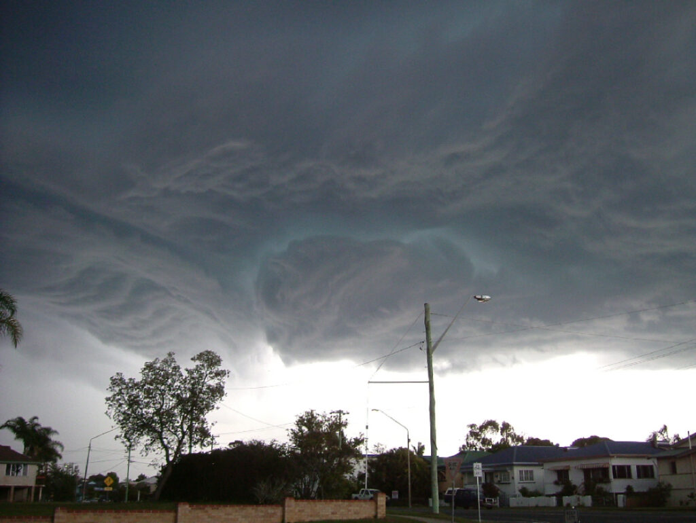
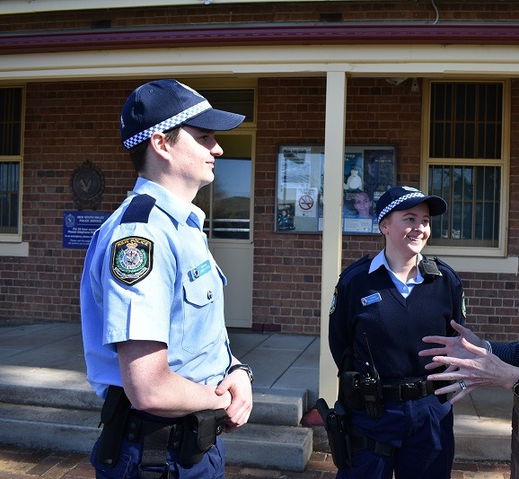
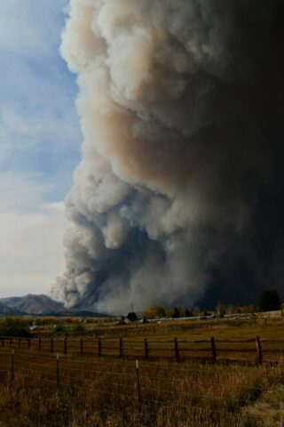
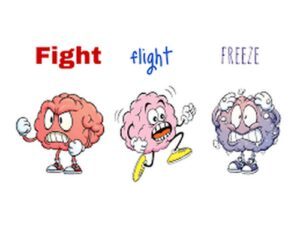

Emergencies come in many forms. An emergency is a situation that happens suddenly and unexpectedly, where there is a risk of harm to people, property, or the environment.
It is when we might need help quickly because something dangerous or very serious has happened. For example, an emergency can be a severe weather event like a flood, bushfire, bad storm or cyclone.

During an emergency, there may be people who come and help you be safe.
They can include:


Emergencies can be scary, but it’s important to stay as calm as you can and pay close attention to what people tell you to do.
If you can do this well, it will ensure you are kept safe and out of any danger.
During a flood or bushfire, there are several things you can expect and should be prepared for:
During a Flood
Rising Water: Water levels will increase quickly, which can lead to flooding in streets, homes, and other areas.
Power Outages: Electricity may be cut off to prevent accidents and damage to the electrical infrastructure.
Evacuation Orders: Authorities may issue evacuation orders for certain areas that are at risk of severe flooding.
Road Closures: Some roads may be closed due to high water levels, making travel difficult or impossible.
Limited Services: Emergency services may be stretched, and it might be harder to get medical help, food, and water.
During a Bushfire
Smoke and Heat: There will be a lot of smoke, which can make it hard to see and breathe, and the temperature will be very high.
Evacuation Orders: Like with floods, emergency personnel may issue evacuation orders for areas at risk of being affected by the bushfire.
Changing Conditions: Bushfire conditions can change rapidly with the wind, so it’s important to stay informed and ready to act quickly.
Embers: Even if the main fire front has not reached your location, embers can be carried by the wind and start new fires.
Loss of Services: Power, water, and communication services may be disrupted.
For both floods and bushfires, it’s important to have an emergency plan in place, know the evacuation routes, and keep a kit of essential supplies ready. Stay informed through local news, emergency services updates, and adhere to the advice and instructions given by authorities.
During an emergency, people might have different emotions such as:
During an emergency, people might have different thoughts such as:
You might notice your body feeling different:
These are normal feelings to get and will help you during an emergency to keep safe.
These emotions, thoughts and feelings are all part of our fight, flight or freeze response.
All of this happens because our body wants to keep us safe from danger.
It’s like our body’s way of helping us out of trouble to stay safe.
